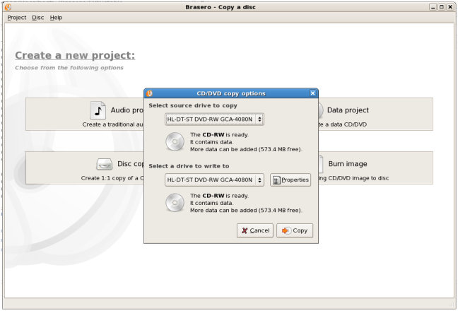
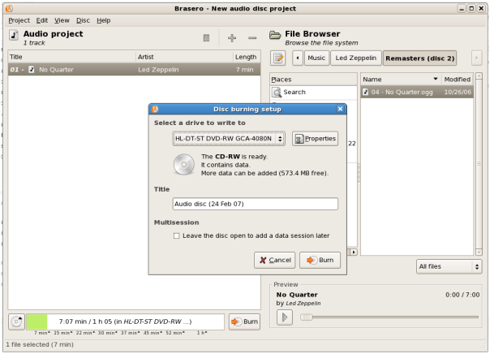
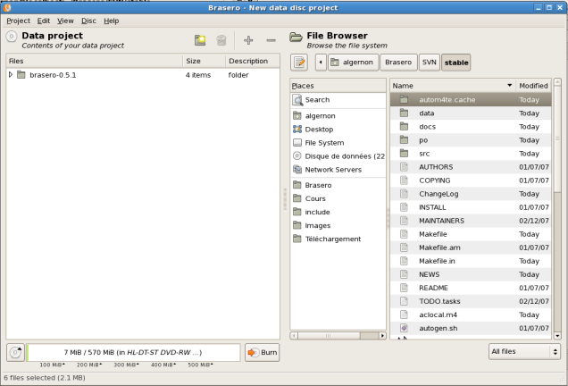

Copy Disc Window.

Audio Disc Dialog.

Data Project Dialog.

Downloads
The latest releases can always be found at the GNOME ftp site.
The latest stable release is 0.7.0 (NEWS).
Feedback
Bugs should be reported to the GNOME Bug Tracking System.